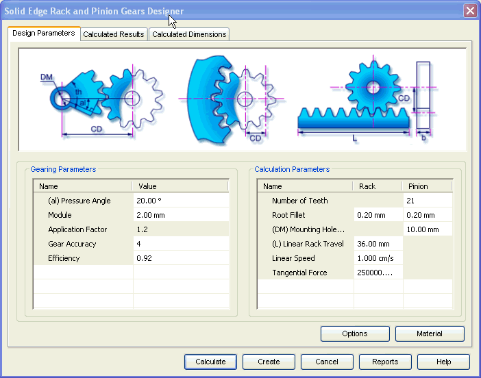

Rack and Pinion Design Parameters tab
The details required for the design of Rack & Pinion Gear Pair are entered in Design Parameterstab. This tab consists of two areas.

Gearing Parameters
Use this area to input parameters for design and strength calculations.
Calculations Parameters
Use this area to define specific parameters of Rack and Pinion.
Options button
Use the options button to access the Input Conditions window and select the type of Rack and the method of calculation for strength. The inputs provided in the Design Parameters tab are based on the selections in the Input Conditions window.
Material button
Use the Material button to select the material for the gears.
Learn more
Rack and Pinion Gears moduleUsing the Rack and Pinion module
Rack and Pinion Calculated Results tab
Rack and Pinion Calculated Dimensions tab
Rack and Pinion Material selection
How to (Rack and Pinion)
Standards Used for Rack and Pinion Gear calculations